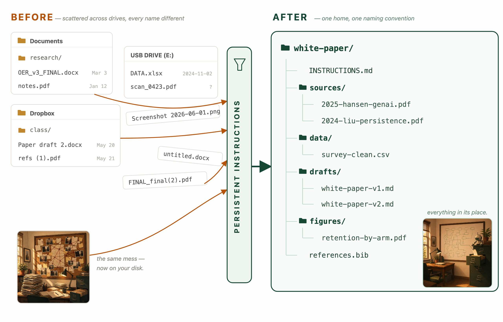

Give your AI a home.
Turn a semester of scattered course material into a workspace that helps you write your white paper — and keeps helping long after this class ends.
↓ Download this guide as a PDFOpen ChatGPT, Claude, or Gemini → make a Project (Claude / ChatGPT) or a Gem (Gemini) → paste in the instruction file from Move 2 → upload the documents you're working from → then start every chat from inside it. That's the whole move — it's Rung 2, the right home for almost everyone. Everything below is why it works and how to do it well.
Most of what you need is already on your computer. You're just paying to move it around.
A syllabus. Ten journal prompts. Lab outputs. Readings. Slide decks. An AI-model presentation. It has come at you as a flood of email and Canvas notifications, and most of it feels like noise you're trying to keep up with.
It isn't noise. It's the raw material for the one deliverable that's still ahead of you: a 1–2 page white paper on a real healthcare topic, worth 20% of your grade, due 20 July. Much of what you'll build on is already sitting in a folder somewhere on your computer — your course, your notes, your standards; the sources for your topic you'll still go and find. Either way, the hard part was never the material. It's what it costs you to use it — and that cost comes as three quiet taxes you pay all week without noticing:
OER_v3_FINAL_FINAL.docx.You've spent this course learning to write good prompts — one careful question at a time, into an AI that forgets you the moment the chat closes. That works, but it pays all three taxes in full. This guide is about the next move: give the AI a persistent home — a place that already holds your course, your topic, and your standards — so you stop starting cold.
The whole method is three moves. You'll do them in order, and the rest of this guide is those three moves spelled out with the exact prompts to paste:
First, though, you have to decide where the AI's home will be — because that decides which of the three taxes you actually stop paying.
There are three ways to give the AI a home. The difference is who does the remembering.
The three taxes — reloading, re-finding, re-saying — don't disappear. In every setup below they still exist. The only thing that changes is who carries them: you, a box in the cloud, or a folder on your own computer.
![Three panels showing the same three chips — re-explaining, re-finding files, re-saying it. Panel 1, Just Prompting: you carry all three chips and reload them every session; the AI is a blank slate. Panel 2, A Saved Workspace: the three chips live in a box in the vendor's cloud that you load once and the AI reads each time. Panel 3, A Folder on Your Computer: the chips live in a folder on your machine with the AI inside it, reading them itself while you just ask. A bar underneath shows the work of remembering moving off of you and onto a structure that lives on your computer.](figures/who-carries-context.png)
Picture these three setups as a ladder: just prompting at the bottom, a saved workspace in the cloud in the middle, and a persistent home on your own computer at the top. You do not have to climb to the top. Higher rungs are more capable and keep your work more firmly under your control — but they ask more of you to set up. Most of you should stand on the middle rung. Here's each one in full:
Drag your documents into a normal chat and ask questions. Fine for a quick, one-time task — but it isn't really a home. When the chat closes, the context is gone; next time you re-upload and re-explain from scratch. Nothing is organized, and nothing persists.
A saved workspace where you write the AI's instructions once and upload your knowledge once — and every new conversation starts warm, already knowing your course and your topic. No coding. This is the right home for almost everyone in this room.
What it's called: Gemini Gems (free) · ChatGPT Projects (works on the free tier) · Claude Projects (free, capped at a handful) · Microsoft Copilot agents (needs a paid work license). On the government side, GenAI.mil now has a no-code Agent Designer that follows this same save-your-context pattern.
Rungs 1 and 2 hand you text to copy out. Rung 3 does more than generate — it acts. Because it runs on your own computer, it can do anything your command line can: update a document in place instead of making a new copy every time, run a program, render a polished PDF, reorganize a folder, even send an email on your behalf. Everything stays on your hard drive; nothing lives in someone else's window. The most powerful and most private option, with the steepest ramp.
Where to start: if you want to try this rung, Cline is the friendliest on-ramp for a non-coder. (Alternatives, roughly hardest-working to simplest: Claude Code, Gemini CLI, OpenAI Codex CLI, Cursor; and Claude Cowork / Claude for Chrome, both still in preview. The exact tools churn — the discipline doesn't.) For data that legally can't leave your computer, a local model run with Ollama or LM Studio keeps everything — files and processing — on your machine.
The word "prompt" only names the tip of the iceberg — the sentence you typed. Below the waterline sits everything the model actually reads to answer you: the standing instructions, your uploaded files, the earlier turns of the chat, whatever it retrieved. A home is just a way to own what's below the waterline instead of retyping it. The rule of thumb: Always Be Contexting — never make the model guess at something you could have handed it.
The same three moves — discover, scaffold, enforce — work on every rung. Pick the lowest rung you're comfortable with today. You can always climb later, and nothing you learn is wasted when you do.
"Runs on my computer" is not the same as "stays on my computer." On Rungs 1, 2, and most of Rung 3, your files may sit on your disk but their contents are still sent to a cloud model on every request. That means no PHI, no PII, no patient data, no CUI goes into any of these — the same rule you learned in Lesson 3. Your white paper uses public and course material, so you're fine here. The only setup that keeps data truly on the machine is a local model (Ollama or LM Studio) — that's the path for genuinely sensitive work.
Point the AI at the pile and let it show you what's there.
The first move surprises people. You don't sort the pile first and then ask the AI. You gather it all in one place, hand the AI the unsorted heap, and let it help you see what's there — including what your paper should be about.
First, gather the corpus into one folder
Before the AI can help you make sense of the course, it needs to be able to see the course. Collect all of it — you'll sort it later:
- The syllabus. The most important file. The white-paper rubric lives here — what it must contain, how it's graded, the writing standard.
- Readings and slide decks from every lesson so far.
- Your own work — lab outputs, your reflective journal entries, your AI-model presentation. Your half-formed ideas are in there.
Do this yourself — don't wait for someone to hand you a tidy bundle. Every course you take dumps its material into Canvas, and knowing how to pull the whole thing down is a skill you'll reuse long after this class ends. Open Files in the course menu, tick the checkbox at the top to select everything, and download it as a zip. For the syllabus and anything that doesn't live in Files, open it and use your browser's Print → Save as PDF. Drop it all in one place for now — even your Downloads folder is fine.
Then let the AI find your topic
Load your material into your Rung 2 workspace (or point your Rung 3 agent at the folder), then paste this:
Here is everything from my Foundations of Applied AI in Health
Care course. Read the syllabus FIRST — especially the White Paper
assignment and how it's graded.
Then help me find my topic:
1. Summarize the main themes this course has actually covered,
based on the materials — not general knowledge.
2. Propose 6–8 white-paper topics that are:
- relevant to a real, contemporary healthcare organization,
- clearly tied to THIS course's content (name which lesson or
reading each one draws on),
- narrow enough to cover well in 1–2 pages.
3. For each topic, note what I could use for background and
what a recommended solution might look like.
Before you finalize the list, ask me 2–3 questions about my job,
my interests, and what I actually care about — so the topics fit
me, not a generic student.
Free workspaces cap how many files you can add, and a hundred slide decks bury the few that matter. Load the syllabus and rubric first, then the three to five readings you'll actually cite — add more only as you use them. Quality of context beats quantity, and it keeps you under the free-tier limits.
Answer its questions honestly. What comes back is a shortlist of topics that are already grounded in the course and matched to you. You didn't need to know your topic before you started — the AI plus the corpus surfaced it. Pick one and move on.
The AI proposes; you decide. Don't take the first topic because it's easy — take the one you can say something real about. Writing is thinking, and it's a lot easier to think about something you care about.
You don't build the folder from scratch — you start from a kit.
The rule is simple: every file has one home. When you know where each thing goes, so does the AI. So we hand you a starter workspace — you fill it in rather than architect it.
Grab the starter workspace from the course page and unzip it. It already holds the instruction file, a sources/ folder, the reading checklist, and the rubric. On Rung 2, upload its files into your Project or Gem; on Rung 3, just open the folder with your agent.
Here's what's inside — four homes, nothing spare:
This is where your Downloads pile gets sorted: the readings you decide to cite move into sources/, your standard goes in rubric/, and everything else you can leave behind. sources/ is the folder that fills up — the rest barely changes.
The instruction file — your AI's contract
This one file changes everything: who the AI is working for, how it must behave, and the lines it can't cross. Open INSTRUCTIONS.md (or paste it into your Project/Gem's custom-instructions box) and fill in the one blank:
WHO YOU ARE A skeptical, fair editor and reading coach — not a cheerleader. Your job is to help me understand what I read and defend what I write. Don't flatter, don't hedge to be polite, don't soften a real problem, and don't invent one. WHAT WE'RE DOING Helping me read and evaluate papers on [TOPIC] and write a 1–2 page white paper. HARD RULES — never break these 1. Never invent a statistic, source, quote, or citation. If you don't have it, say so and ask me. 2. Trace every factual claim to a real file in /sources. Name it. 3. Don't lead the witness. When you evaluate anything, find what's strong AND what's weak. Never just tell me what I want to hear. 4. Flag uncertainty as uncertainty. 5. Track which AI you are and how I used you, so I can disclose it. VOICE Plain English. BLUF — bottom line up front. Short sentences, active verbs. No "utilize," no "leverage," no hedging. If I'd be embarrassed to say it out loud in a briefing, rewrite it.
We call this file INSTRUCTIONS.md because the name says what it is. It's the same idea as the CLAUDE.md, AGENTS.md, and GEMINI.md files you may have seen — those aren't different things, they're just the specific names certain tools look for and load automatically. Same contract, different filename. On Rung 2 you paste it into a custom-instructions box; on Rung 3 you save it under the name your tool expects. More on that in Collaboration & version control.
Rule 1 — "never invent a source" — is not boilerplate. It's the whole game. Lesson 8 taught you the rest: you are the author of record. A made-up citation the AI hands you is your signature on a lie.
Force everything through the standard — read, draft, review.
The home is built. Now you keep the standard by running everything through it. Three passes, in order: understand your sources, draft grounded in them, then hand the draft to a skeptic. Each pass has one prompt.
Read — understand it before you cite it
This is the step people skip — and it's the one that separates a real white paper from a stack of half-understood quotes. Your workspace turns the AI into a reading coach, not a summary machine. Drop a paper into sources/ and work through it together.
Walk me through the paper in /sources using rubric/reading-a-paper.md. Don't lead the witness — tell me what's strong AND what's weak. Go in this order: 1. In plain English: what does this paper claim, and what evidence is it actually resting on? 2. Itemize its assumptions — the ones it states AND the ones it doesn't. Which one, if wrong, breaks the conclusion? 3. How strong is it, really — "settles it" or "suggestive"? Why? 4. Give me the exact citation, pulled FROM the paper. Do not invent one. Then quiz me: ask me to state the finding in my own words, and tell me where I've misunderstood it.
That last move — having it quiz you — is how you find out whether you understood the paper or just nodded along. If you can't restate the finding with the paper closed, you're not ready to cite it.
Draft — grounded, not from thin air
With the corpus in the workspace and the instruction file in place, the AI drafts from your materials and your standard — not from generic internet filler.
Using my instruction file (INSTRUCTIONS.md) and the papers in /sources, draft my 1–2 page white paper on [TOPIC]. Follow the rubric's four parts: main idea, relevant background, the detail needed to understand the topic and its solutions/uses, and recommended solutions/uses. Rules: - Clear, direct style. BLUF. Active voice. Plain words. - Do NOT invent statistics, sources, or quotes. If you need something you don't have, stop and ask me. - Wherever you use a fact, mark it in brackets with the file it came from, e.g. [sources/ayers-2023.pdf], so I can check every claim later. Draft one section at a time and pause after each so I can steer.
Work through it section by section. Push back. Cut what's generic. Add what only you know from your own experience — that's the part no AI can supply, and it's usually what makes a white paper worth reading. You're the writer; the AI is fast hands. Those [filename] markers become your citation trail for the next pass.
Review — you can't grade your own homework
The draft is the easy part. What separates a real white paper from an AI-flavored one is this loop: hand it to a skeptic, take the hits, and revise. The standard is already in your folder — rubric/white-paper-rubric.md — so the AI grades against the real rubric, not its guess of one. Open a fresh conversation (or a different AI tool) so nothing is invested in defending the draft, and set it loose:
You are Referee 2 — a skeptical, fair reviewer who wants this paper to be right, not to feel good. Here is my white paper. Grade it against rubric/white-paper-rubric.md. Grade each rubric criterion PASS / WEAK / FAIL and say exactly why. Then: 1. Flag EVERY factual claim that isn't clearly traceable to one of my source files. Treat each as a possible fabrication until I prove otherwise. 2. Name the single weakest argument and show how a hostile reader would attack it. 3. List what I'd have to defend if my commander asked, "Where did each of these numbers and claims come from?" 4. Check the writing against a plain-writing standard — mark passive voice, hedging, and needless words to cut. Do NOT rewrite it for me. Tell me what to fix and let me fix it.
Now revise against the critique. Re-run the review. Repeat until it passes clean. Two or three loops is normal — and each one is you doing the thinking, not outsourcing it.
Disclose the AI. The white paper requires you to state which AI model(s) you used and how. Keep the note from your instruction file and put it in.
Own every word. The output must be edited and represent your final judgment. If you couldn't defend a sentence without the AI in the room, cut it or make it yours.
This "build it, then refine and test it against a hard critic" loop isn't just good practice — it's the direction professional military education is moving, with staff colleges increasingly teaching officers to work AI hard rather than take its first answer. You're rehearsing that habit, on a task that counts.
Level up: hand it a book you've actually read
A generic "skeptical reviewer" is good. You make it far sharper by giving it a specific standard to judge against — a book whose method you've genuinely internalized. Drop the book (or its key chapters) into the workspace and have the AI review your draft against it, one chapter at a time.
I've been through the complexity of these books — read them, been tested on them, written to their standard. Putting one in the folder extends my reach; it doesn't replace my judgment. The book supplies the questions a careful expert reaches only after climbing it — not the five I already ask off the top of my head.
How. Turn the book into a checklist: distill each chapter into the principles you want enforced, then run your draft against them, chapter by chapter. It can take all night. So what — that's a thoroughness no tired human sustains at 11pm. The keystone question to insist on: "Itemize the explicit and implicit assumptions in this draft." The implicit ones are where the bodies are buried.
Never tip the model toward the answer you want. Ask it to find what's wrong and what's right — a neutral interrogation, not a friendly one. Steering it to your prior isn't just weak; it's fooling yourself. As Feynman put it: "The first principle is that you must not fool yourself — and you are the easiest person to fool." You're not asking the AI to bless your conclusion; you're building a machine that argues with you.
The books I load as reviewers, in order:
- Bueno de Mesquita & Fowler, Thinking Clearly with Data — start here. The common language for any quantitative claim: what kind of claim is it, does the evidence support it, could something else explain it, are we measuring what we think we are.
- Scott Cunningham — the "Referee 2" protocol — a worked method for turning an AI into a hostile-but-fair empirical reviewer.
- Huntington-Klein, The Effect (free online) — the methods bench for anything claiming cause and effect.
One discipline holds it together: reason only from sources solid enough to defend. If your draft leans on a method the book doesn't cover, the AI should say so — flag it as "needs a real source" rather than bluff from a half-remembered fact. That's the same rule as Move 2's "never invent a source," pointed back at your own reasoning.
Put the home where the team can reach it — and give the AI a filename it already knows.
A workspace on one laptop helps one person. The same workspace on a shared drive, with a standard instruction filename, becomes something a whole team — and a future you — can pick up cold. Two small decisions do it.

Where the folder lives — collaboration platforms
Keep the workspace on a drive that everyone works from, not on one person's desktop. Box and Dropbox keep one current copy that syncs to the whole team and quietly saves old versions, so there's no "final_v7_JB_edits" drift and you can roll back a bad change. GitHub does the same with a full, deliberate history — every change tracked, every version recoverable, built for people working the same files at once. Whichever you use, the win is the same: one home, one current copy, nothing lost.
"Version control" just means the drive remembers every earlier state of your files so you can always go back. You already rely on it every time Box shows "previous versions" — naming it doesn't make it harder.
What the AI reads first — the persistent instruction file
Your INSTRUCTIONS.md works on any rung — on Rung 2 you paste it into a custom-instructions box. But the on-your-computer tools do something better: give the file a conventional name and the agent reads it automatically, before you say a word, so the contract loads itself every session.
One name has become the standard: AGENTS.md. It's an open, vendor-neutral convention that most agent tools now read — OpenAI Codex, Cursor, the Gemini CLI, GitHub Copilot, and Claude Code. Make that your one real instruction file. A couple of tools still look for their own name, but don't keep three full copies — you'll edit one and forget the others, and you're right back to FINAL_final. Instead, make the others a one-line pointer:
Keep that file with the rest of the workspace on your shared drive — save it to Box or Dropbox, or, on GitHub, commit it — and the whole team inherits the same standard from one source of truth.
Beyond format — teach it who you are.
Everything so far gets the AI to write correctly. This last move gets it to write like you — and toward what you actually care about. It's optional, and it's the difference between a competent draft and one nobody would guess a machine touched.
Your voice — show, don't tell
No rule captures rhythm, word choice, and where you land your emphasis. So don't describe your voice — demonstrate it. Paste in two or three pieces of writing you're proud of and let the AI infer the pattern:
Below are three things I wrote and am proud of. Don't compliment them — study them. Describe my voice back to me: sentence length and rhythm, the words I reach for and the ones I avoid, how I open and how I land a point. Then save that as a short style note in the workspace and write to it from now on. When a draft drifts off my voice, tell me where. [paste your writing here]
A TELOS document — the why behind the writing
A style note teaches the AI how you write. A TELOS document teaches it why. It's one short structured file — your purpose, the missions you're on, your goals, and the values you won't trade — kept in the workspace root. With it, the AI stops writing generic-correct prose and starts writing toward what you're actually trying to do. A first pass is fifteen minutes:
Interview me to build a short TELOS document — my purpose, my current missions, my goals for the next few years, and the values I won't compromise. Ask me one question at a time, maybe eight in all, and push back if an answer is vague. Then draft it as a one-page file I can keep in my workspace and point you at whenever we write something that matters.
A self-authoring exercise
If that lands, go further on your own: structured writing about your past and your ideal future — the kind of guided reflection used in self-authoring programs. It does two things at once. It gives the AI a far richer picture of what drives you, and it shows you what you believe, in your own words, before you ever ask a machine to help you say it.
Handing the AI your voice and your purpose is the opposite of handing over your judgment. The clearer it is on who you are, the easier it is to catch when a draft isn't you — and to cut it. The goal is an assistant that sounds like your best self, not a replacement for having one.
Now you build your own.
You start from a workspace that's already built — you don't architect it, you fill it in. What you'll have at the end is a real deliverable and a habit that outlasts it.
sources/ folder, the reading checklist, the rubric. Drop a paper in, walk it through, draft against the standard.And it's the first rung of a tall ladder. The same pattern, fully built out, becomes a research project where one command reproduces an entire paper from raw data to final figures — the AI maintaining the pipeline while the researcher makes the decisions. You won't build that today, but the way up is the same three moves, just packaged for scale: your reading checklist can become a reusable Skill the agent loads on its own when it's relevant, and open plumbing like MCP (the Model Context Protocol) wires the agent straight into live sources — a citation database, your own files — so it fetches facts instead of guessing at them. And the direction is set: military staff colleges are increasingly teaching officers to build and test AI tools, not just use them, and government platforms like GenAI.mil are adding no-code ways to build your own assistant. The specific tools churn — the ones you'll use in a year may not exist yet — but the discipline transfers even when the tool changes.
What your finished home looks like
By the end, the four-folder starter has grown into a home for everything the method produces — not just what you read and wrote, but the critiques you collected and the voice you taught it. Here's the shape to aim for:
Two of those homes are new since the starter kit: review/, where you keep what the skeptical reviewer found and what you changed, and voice/, where your style note and TELOS document live. Keep the whole thing on a shared drive with version history and it stops being a one-time trick — it's a home you (and your team) come back to for the next paper, the next brief, the next decision.
Train your AI without un-training yourself. The goal was never to hand the thinking over. It was to stop paying the three taxes — re-explaining, re-finding, re-saying — so the thinking you do is the thinking that counts. Be a skeptic, not a cynic: set the machine up, then check everything it hands you, and never sign what you couldn't defend on your own.
Everything referenced here, in one place.
The links behind the ideas in this guide — and, at the end, the serious toolkits if you ever want to turn this into a research-grade review pipeline.
Context engineering
- Effective Context Engineering — Anthropic Applied AI team.
- Anthropic Cookbook — memory, compaction, tool clearing.
- Projects — persistent state, the no-code version of a home.
Reading & evaluating evidence
- Bueno de Mesquita & Fowler, Thinking Clearly with Data — claim, evidence, assumptions. Start here.
- Scott Cunningham — "Referee 2" with AI — adversarial empirical review.
- Huntington-Klein, The Effect — free online; the methods bench for cause-and-effect claims.
- Pyrrho of Elis (c. 360–270 BCE) — skepticism as discipline, not cynicism.
Voice & writing
- McCloskey, D. (1999). Economical Writing — the read-aloud test; active verbs.
- Strunk & White, The Elements of Style — Rule 17: omit needless words.
- Tongue and Quill (AFH 33-337) — active voice, BLUF, plain language.
- AR 25-50 — memo format reference.
Agent CLIs & instruction files
- Claude Code, OpenAI Codex CLI, Gemini CLI — the on-your-computer agents.
AGENTS.md— the open, vendor-neutral instruction-file standard most tools now read.- ai-in-the-terminal — install guide for Mac / Windows / Linux.
Government AI tools (2026)
- GenAI.mil — Gemini + ChatGPT, universal CAC, IL5 / CUI.
- Ask Sage — 25+ models, retrieval, IL5.
- CamoGPT — Army-specific, SIPRNet capability.
- M365 Copilot — GCC-High, document-centric.
This workspace & where it goes
- The starter workspace — the folder you fill in, from the course page.
- Give Your AI a Home — this guide; keep it open beside the work.
- Research-Project-Flow — the same pattern scaled to a full research project (the Rung 3 version).
Adversarial reviewers & research tools — for the ambitious
Past a single skeptical reviewer, these are the strongest open toolkits for turning AI into a rigorous research referee. Most assume some comfort with the command line — they're a map of where this goes, not homework for today.
/review-paper --peer, editor/referee roles, journal calibration, and quality gates. (guide)